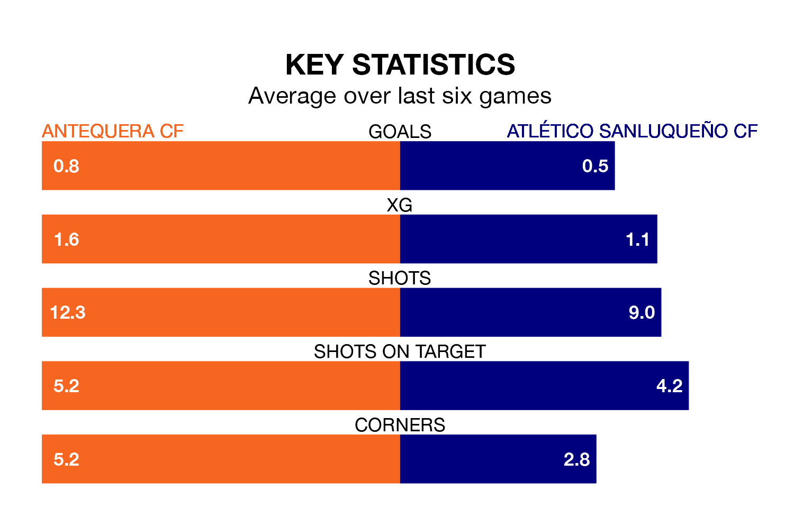

Atlético Sanluqueño CF travel to the Estadio El Maulí looking to secure a first win in six Primera Division RFEF Group 2 games against Antequera CF on late Sunday.
Atlético Sanluqueño have lost three and drawn two matches since they last earned three points – against Linares Deportivo on March 3.
They face an Antequera side who have won one and drawn three over that time.
In Luis Miguel Redondo Fernandez, Antequera have one of the league's most on-form strikers so far this season. He has notched 10 goals in 23 appearances, to sit second in the scoring charts.
His goal rate of one every 197 minutes is slightly quicker than that of Francisco Mwepu, Atlético Sanluqueño's top scorer with a goal every 208 minutes, and a total of seven goals in 21 games.
With 30 goals in 31 games so far this season, the visitors are scoring at below the league average rate with 1.0 goals per game. And they are conceding at an average rate, letting in 35 goals at a rate of 1.1 per game.
The home side, meanwhile, are above average scorers, with 1.2 goals per game, compared to a league average of 1.1. They have also conceded 1.2 goals per game.
Atlético Sanluqueño are 14th in the table after 31 games, of which they have won eight and drawn 11, earning 35 points.
Antequera are six places ahead of Atlético Sanluqueño in eighth, with 12 wins and eight draws putting them on 44 points.
In the last three years, Antequera and Atlético Sanluqueño have played each other on three occasions. Antequera won two of them and Atlético Sanluqueño one.
Their last meeting was on September 24, when Antequera won 3-0 away.
Antequera's last match was on April 7, a 1-0 win against Linares Deportivo, with Pedro Alejandro García Mejías getting the goal for Antequera.
Atlético Sanluqueño lost 3-0 against Atlético Madrid B last time out, also on April 7.
Updated: 14:47 (UTC), 09/04/24